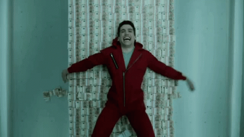

Una banda organizada de ladrones se propone cometer el atraco del siglo en la Fábrica Nacional de Moneda y Timbre. Cinco meses de preparación quedarán reducidos a once días para poder llevar a cabo con éxito el gran golpe. Sergio Marquina, alias El Profesor, ha planeado de forma minuciosa desde su infancia el atraco de la Fábrica Nacional de la Moneda y Timbre. Con la ayuda de un grupo de ocho delincuentes, de nombre ficticio y el rostro enmascarado, pretende ocupar el edificio durante 11 días, a fin de fabricar 2.400 millones de euros.

AL 95% DE LOS USUARIOS QUE VIERON ESTA PELICULA LES GUSTO
La casa de papel es una serie de televisión española creada por Álex Pina, producida por Atresmedia en sus inicios, aunque posteriormente por Netflix y con el periodista y guionista Javier Gómez Santander como coproductor ejecutivo. Protagonizada por Úrsula Corberó, Itziar Ituño y Álvaro Morte, se presentó en el III Festival de Televisión de Primavera en Burgos en marzo de 2017 y el 2 de mayo de ese mismo año se estrenó en la cadena española Antena. Esta cadena distribuyó las dos primeras partes de la serie en España antes de que Netflix la adquiriera a finales de 2017 y la editase, reeditase y distribuyese las dos partes por todo el mundo. La serie está inspirada en el protocolo del atracador de bancos Willie Sutton, que concibió más de 100 golpes mediante disfraces y engaños y sin necesidad de disparar a nadie. Eso le reportó dos millones de dólares en las décadas de 1920-1950.
La serie cuenta con 41 episodios repartidos en 5 temporadas; las dos primeras partes tratan sobre el atraco de la banda a la Fábrica Nacional de Moneda y Timbre, mientras que la tercera, cuarta y quinta parte es al Banco de España. Los creadores consiguen combinar acción, intriga, suspenso, e incluso romanticismo y, en la última temporada, un carácter bélico, con una gran caracterización de los personajes y un atrapante argumento. Todas estas cualidades la convierten en la serie española más exitosa de todos los tiempos. La casa de papel finalizó el 3 de diciembre de 2021, tras 3 temporadas y 5 partes emitidas.
Tras su final, Netflix anunció que ya trabaja en un spin-off sobre la vida de “Berlín”, interpretado por Pedro Alonso, para 2023 y en una nueva precuela llamada “El Golpe Del Siglo” para 2024.